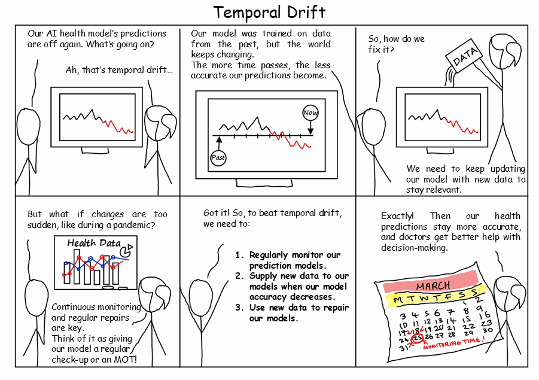

Welcome to PREDICT¶
The PREDICT project (Pragmatic Recalibration and Evaluation of Drift In Clinical Tools) aims to improve the way that clinical prediction models are deployed and maintained.
Although this project is primarily focused on the UK healthcare system, the tools and methods developed are applicable to any binary prediction model.
The PREDICT project is a research project funded by the National Insitute for Health and Care Research (NIHR206843) which aims to:
Build software to help detect and repair temporal drift Github
Understand public opinion around the use of AI for clinical decision making, and deployment issues
Raise the profile of this issue with relevant stakeholders, and suggest potential regulatory solutions
To contact the team, please email the project lead Dr Samuel Relton (s.d.relton@leeds.ac.uk)
{kind=link}

Links¶
Team¶
The core PREDICT team is:
Samuel Relton (s.d.relton@leeds.ac.uk)
Zoe Hancox (z.l.hancox@leeds.ac.uk)
Kate Best (k.e.best@leeds.ac.uk)
Oliver Todd (o.todd@leeds.ac.uk)
Barbara Hartley
Documentation¶
Here is the full documentation for the PREDICT software, the associated Github with examples of usage is here.
Contents: